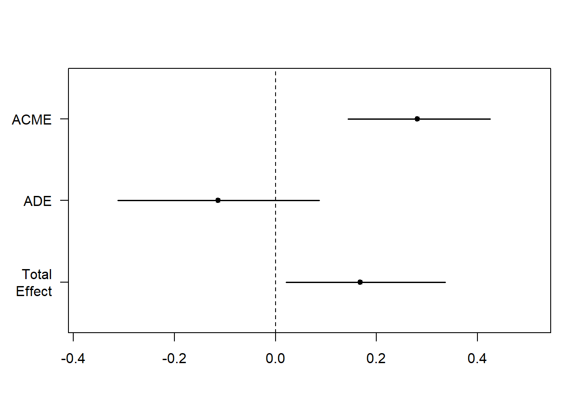

library(mediation) #Mediation package
library(multilevel) #Sobel Test
library(bda) #Another Sobel Test option
library(gvlma) #Testing Model Assumptions
library(stargazer) #Handy regression tables10 Mediation analysis
This example borrows heavily from Demos & Salas (2019). A Language, not a Letter: Learning Statistics in R (Chapter 14)
10.1 Overview
TipAt the end of this chapter, you will be able to:
- Explain the difference between mediation and moderation.
- Apply the Baron and Kenny approach to mediation analysis in R.
- Apply the Preacher & Hayes (2004) mediation approach in R.
- Interpret the output of mediation analysis.
10.2 What is mediation?
The basic premise of mediation is that the relationship between a predictor (X) and an outcome (Y) is mediated by another variable (M). That is to say, X predicts M, which in turn predicts Y.
When thinking about mediation, form a research perspective, we could be saying that the relationship between X and Y is explained by M. That is to say, M is the mechanism through which X influences Y.
To use an example, consider the relationship between internet usage and self-esteem. We might know from previous findings that internet usage predicts self-esteem. Perhaps higher internet usage is associated with lower self-esteem.
However, we might theorise that the relationship between internet usage and self-esteem is mediated by social media usage. That is to say, internet usage predicts social media usage, which in turn predicts self-esteem. If this turns out to be the case, then we might say that social media usage is the mechanism through which internet usage influences self-esteem. That would mean that it is not internet usage per se that influences self-esteem, but rather the way in which people use the internet (i.e., through social media) that explains the relationship.
Importantly, theoerising mediation (like all models) requires a strong rationale that is based on previous research evidence or a well-developed theoretical model. We need good reason to believe that the relationship between X and Y is mediated by M, we cannot simply test for mediation with no basis and use the result to justify a post facto theory.

In the above model, we theorise that the relationship between internet use and self-esteem is mediated by social media usage.
10.3 What is the difference between mediation and moderation?
The key difference between mediation and moderation is that mediation is about the third variable (M) explaining the relationship between X and Y, whereas moderation is about the third variable (M) changing the relationship between X and Y.
10.4 Mediation analysis
Mediation analysis is based on regression analysis. In the past it was tested using the Baron and Kenny (1986) approach, but more recently the Preacher & Hayes (2004) bootstrapping approach has become more popular.
Baron and Kenny (1986) originally used a 4-step regression model to test each of these relationships. The Sobel test is then used to test the significance of mediation.
A summary of the logic of mediation (mirroring the Baron and Kenny approach) is as follows:
- The direct relationship between X and Y should be significant
- The relationship between X and M should be significant
- The relationship between M and Y (controlling for X) should be significant
- When controlling for M, the strength of the relationship between X and Y decreases and is not significant
10.4.1 What packages do we need?
10.5 Mediation analysis (the Baron and Kenny Approach)
10.5.1 Conducting mediation analysis (the Baron and Kenny Approach)
Baron & Kenny (1986) originally used a 4-step regression model to test each of these relationships. The sobel test is then used to test the significance of mediation. The idea with this approach is that you can test each of the paths in the mediation model to see if they are significant. If they are, you can then test the significance of the indirect effect.
A crucial part of this process is the idea that the significance of the total effect is no longer present when the mediator is included in the model. This is because the mediator is now explaining the relationship between the IV and DV.
This highlights one of the issues with this approach: looking for a lack of significance as indirect evidence of an effect. In addition, the assumption that the total effect is no longer significant when the mediator is included does not always hold true.
Another issue with this approach is that it does not test the significance of the indirect effect. This is where the Sobel test comes in. The Sobel test checks the significance of the indirect effect. However, the Sobel test is less reliable with smaller sample sizes and when the data is not normally distributed.
Nevertheless, it is still a useful approach to understand the logic of mediation analysis and to be able to interpret the output of mediation analysis in published papers.
For this example, we will use variables named X, M, and Y. This is just for the purposes of this example. In your own research, you would replace these with your own variables. Similarly, the names of the models are named fit, fita, fitb, and fitc. These are just for the purposes of this example. In your own research, you can name these models however you like.
10.5.2 Step 1: Total Effect
The first model we run is the total effect model. This model tests the relationship between the Precictor (X) and the Outcome (Y). This is before we include the mediator in the model. We need this model to be significant to move on to the next steps. If it is not, then we cannot test for mediation.
#1. Total Effect
fit <- lm(Y ~ X, data=Meddata)
summary(fit)
Call:
lm(formula = Y ~ X, data = Meddata)
Residuals:
Min 1Q Median 3Q Max
-10.917 -3.738 -0.259 2.910 12.540
Coefficients:
Estimate Std. Error t value Pr(>|t|)
(Intercept) 19.88368 14.26371 1.394 0.1665
X 0.16899 0.08116 2.082 0.0399 *
---
Signif. codes: 0 '***' 0.001 '**' 0.01 '*' 0.05 '.' 0.1 ' ' 1
Residual standard error: 5.16 on 98 degrees of freedom
Multiple R-squared: 0.04237, Adjusted R-squared: 0.0326
F-statistic: 4.336 on 1 and 98 DF, p-value: 0.0399310.5.3 Step 2: Path A (X on M)
The second model we run is the relationship between the Predictor (X) and the Mediator (M). This is to test if the IV predicts the mediator. This is important because if the IV does not predict the mediator, then the M variable cannot be a mediator.
#2. Path A (X on M)
fita <- lm(M ~ X, data=Meddata)
summary(fita)
Call:
lm(formula = M ~ X, data = Meddata)
Residuals:
Min 1Q Median 3Q Max
-9.5367 -3.4175 -0.4375 2.9032 16.4520
Coefficients:
Estimate Std. Error t value Pr(>|t|)
(Intercept) 6.04494 13.41692 0.451 0.653
X 0.66252 0.07634 8.678 8.87e-14 ***
---
Signif. codes: 0 '***' 0.001 '**' 0.01 '*' 0.05 '.' 0.1 ' ' 1
Residual standard error: 4.854 on 98 degrees of freedom
Multiple R-squared: 0.4346, Adjusted R-squared: 0.4288
F-statistic: 75.31 on 1 and 98 DF, p-value: 8.872e-1410.5.4 Step 3: Path B (M on Y, controlling for X)
The third model we run is the relationship between the Mediator (M) and the Outcome (Y), controlling for the Predictor (X). This is to test if the M variable predicts the Outcome, controlling for the Predictor. This is important because if the M variable does not predict the Outcome, then it cannot be a mediator.
#3. Path B (M on Y, controlling for X)
fitb <- lm(Y ~ M + X, data=Meddata)
summary(fitb)
Call:
lm(formula = Y ~ M + X, data = Meddata)
Residuals:
Min 1Q Median 3Q Max
-9.3651 -3.3037 -0.6222 3.1068 10.3991
Coefficients:
Estimate Std. Error t value Pr(>|t|)
(Intercept) 17.32177 13.16216 1.316 0.191
M 0.42381 0.09899 4.281 4.37e-05 ***
X -0.11179 0.09949 -1.124 0.264
---
Signif. codes: 0 '***' 0.001 '**' 0.01 '*' 0.05 '.' 0.1 ' ' 1
Residual standard error: 4.756 on 97 degrees of freedom
Multiple R-squared: 0.1946, Adjusted R-squared: 0.1779
F-statistic: 11.72 on 2 and 97 DF, p-value: 2.771e-0510.5.5 Step 4: Reversed Path C (Y on X, controlling for M)
The fourth model we run is the relationship between the Outcome (Y) and the Predictor (X), controlling for the Mediator (M). This is to test if the relationship between the Predictor and the Outcome is no longer significant when the Mediator is included in the model. This is important because if the relationship between the Predictor and the Outcome is still significant when the Mediator is included, then the Mediator is not mediating the relationship.
At least, this is the logic of the Baron and Kenny approach. However, as we mentioned earlier, this assumption does not always hold true. The significance of the total effect is not always lost when the mediator is included in the model - it could be that the mediator is not a full mediator, but a partial mediator, for example.
#4. Reversed Path C (Y on X, controlling for M)
fitc <- lm(X ~ Y + M, data=Meddata)
summary(fitc)
Call:
lm(formula = X ~ Y + M, data = Meddata)
Residuals:
Min 1Q Median 3Q Max
-14.438 -2.573 -0.030 3.010 11.779
Coefficients:
Estimate Std. Error t value Pr(>|t|)
(Intercept) 96.11234 9.27663 10.361 < 2e-16 ***
Y -0.11493 0.10229 -1.124 0.264
M 0.69619 0.08356 8.332 5.27e-13 ***
---
Signif. codes: 0 '***' 0.001 '**' 0.01 '*' 0.05 '.' 0.1 ' ' 1
Residual standard error: 4.823 on 97 degrees of freedom
Multiple R-squared: 0.4418, Adjusted R-squared: 0.4303
F-statistic: 38.39 on 2 and 97 DF, p-value: 5.233e-1310.5.6 Viewing output
We can use the stargazer package to view the output of the models in a nice table. This is optional.
Summary Table
stargazer(fit, fita, fitb, fitc, type = "text", title = "Baron and Kenny Method")
10.5.7 Interpreting Baron and Kenny approach
A reminder of the logic of mediation:
- The direct relationship between X and Y should be significant
- The relationship between X and M should be significant
- The relationship between M and Y (controlling for X) should be significant
- When controlling for M, the strength of the relationship between X and Y decreases and is not significant
From the output of the models, we can see that:
- The total effect is significant (model 1)
- The relationship between X and M is significant (model 2)
- The relationship between M and Y is significant (model 3)
- The relationship between X and Y is no longer significant when M is included in the model (model 4)
This suggests that the relationship between X and Y is mediated by M.
10.5.8 Running the Sobel test
However, the lack of significance of the total effect when the mediator is included in the model is not enough to test for mediation. We need to test the significance of the indirect (mediated) effect. This is where the Sobel test comes in. The Sobel test checks the significance of the mediated effect.
library(bda)Loading required package: bootbda - 19.0.0mediation.test(Meddata$M, Meddata$X, Meddata$Y) Sobel Aroian Goodman
z.value 3.8393902040 3.8190525305 3.8600562907
p.value 0.0001233403 0.0001339652 0.0001133609The output shows that the p value of the Sobel test is significant. This suggests that the relationship between X and Y is mediated by M.
10.6 Mediation analysis (the Mediation package)
10.6.1 Preacher & Hayes (2004) mediation approach
The Mediation package in R uses the Preacher & Hayes (2004) bootstrapping approach. They argue that in practice, when using the Baron and Kenny approach, few people actually test the significance of the indirect effect. Instead, they simply look for a lack of significance of the total effect when the mediator is included in the model.
“Baron and Kenny simply state that perfect mediation has occurred if c’ becomes nonsignificant after controlling for M, so researchers have focused on that requirement.” (Preacher & Hayes, 2004, p. 719)
Moreover, they argue that the Sobel test is not reliable with smaller sample sizes and when the data is not normally distributed. The bootstrapping approach is more reliable in these cases.
In practice, the newer approach is also simpler. The mediation package in R allows you to run the mediation analysis in fewer steps and gives you more information.
10.6.2 What is bootstrapping?
Their approach uses bootstrapping to estimate the indirect effect.
“Bootstrapping is a nonparametric approach to effect-size estimation and hypothesis testing that makes no assumptions about the shape of the distributions of the variables or the sampling distribution of the statistic” (Preacer & Hayes, 2004, p. 722)
Bootstrapping takes a large number of samples from our data and runs the analysis on each of these samples. The sampling is done randomly with replacement, and each sample in the bootstrap is the same size as our dataset. Using this method, we can create estimates with that fall within a narrower confidence interval (since we have now run the analysis on 100’s of samples). Bootstrapping overcomes concerns about the distribution of our original dataset.
Bootstrapping is not confined to mediation analysis. It is a useful tool in many analysis approaches.
10.6.3 Mediation example
Is the relationship between Internet Use and Self-esteem mediated by Social Media Usage?
10.6.4 Step 1: Run the models
Using this approach, we only need to run two models, rather than four. They are as follows:
- 1
- The first model is the relationship between the Predictor (X) and the Mediator (M). This is to test if the IV predicts the mediator. This is important because if the IV does not predict the mediator, then the M variable cannot be a mediator.
- 2
- The second model is the relationship between the Predictor (X) and the Outcome (Y), controlling for the Mediator (M). This is to test if the relationship between the Predictor and the Outcome is no longer significant when the Mediator is included in the model. This is important because if the relationship between the Predictor and the Outcome is still significant when the Mediator is included, then the Mediator is not mediating the relationship.
You can see that these models are the same as the first and fourth models in the Baron and Kenny approach.
10.6.5 Step 2: Check assumptions
Remember that bootstrapping is a non-parametric approach. This means that it makes no assumptions about the shape of the distributions of the variables or the sampling distribution of the statistic. However, it is still important to check other assumptions of the model, such as linearity. You can use the gvlma function or the plot function to check these assumptions.
gvlma(fitM)
Call:
lm(formula = M ~ X, data = Meddata)
Coefficients:
(Intercept) X
6.0449 0.6625
ASSESSMENT OF THE LINEAR MODEL ASSUMPTIONS
USING THE GLOBAL TEST ON 4 DEGREES-OF-FREEDOM:
Level of Significance = 0.05
Call:
gvlma(x = fitM)
Value p-value Decision
Global Stat 8.833 0.06542 Assumptions acceptable.
Skewness 6.314 0.01198 Assumptions NOT satisfied!
Kurtosis 1.219 0.26949 Assumptions acceptable.
Link Function 1.076 0.29959 Assumptions acceptable.
Heteroscedasticity 0.223 0.63674 Assumptions acceptable.gvlma(fitY)
Call:
lm(formula = Y ~ X + M, data = Meddata)
Coefficients:
(Intercept) X M
17.3218 -0.1118 0.4238
ASSESSMENT OF THE LINEAR MODEL ASSUMPTIONS
USING THE GLOBAL TEST ON 4 DEGREES-OF-FREEDOM:
Level of Significance = 0.05
Call:
gvlma(x = fitY)
Value p-value Decision
Global Stat 3.41844 0.4904 Assumptions acceptable.
Skewness 1.85648 0.1730 Assumptions acceptable.
Kurtosis 0.77788 0.3778 Assumptions acceptable.
Link Function 0.71512 0.3977 Assumptions acceptable.
Heteroscedasticity 0.06896 0.7929 Assumptions acceptable.We can see that there are issues with normality of data, but because we are bootstrapping, this is not a problem.
10.6.6 Step 3.1: Run the mediation analysis on the models
The mediate function will run the mediation analysis on the models we have created. It will give us the following estimates:
- Average Causal Mediation Effects (ACME)
- Average Direct Effects (ADE)
- combined indirect and direct effects (Total Effect)
- the ratio of these estimates (Prop. Mediated).
Firstly, we need the Total Effect to be significant. This is the relationship between X and Y (direct and indirect).
Secondly, we need the ACME to be significant. This is the indirect effect of M (total effect - direct effect) and thus this value tells us if our mediation effect is significant.
We can look at the ADE to see if the relationship between X and Y is direct. If this is not significant, then the relationship between X and Y is mediated by M. If it is significant (and the ACME is also significant), then the relationship between X and Y is both direct and indirect (partial mediation).
The Prop Mediated value tells us the proportion of the total effect that is mediated by M. It is calculated by dividing the ACME by the Total Effect. The closer this value is to 1, the more of the total effect is mediated by M. We can usually read it like a percentage (e.g., 0.87 means 87% of the total effect is mediated). If your ACME is greater than 1, then it could be because the ACME and ADE are in opposite directions (i.e., one is positive and the other is negative). This would lead to a value more than 1 when calculating the proportion, but for practical purposes, we could interpret the ACME as if it were 1 (i.e., all of the effect is mediated by M).
fitMed <- mediate(fitM, fitY, treat="X", mediator="M")
summary(fitMed)
Causal Mediation Analysis
Quasi-Bayesian Confidence Intervals
Estimate 95% CI Lower 95% CI Upper p-value
ACME 0.280779 0.143728 0.424325 <2e-16 ***
ADE -0.113330 -0.311648 0.086472 0.258
Total Effect 0.167450 0.020768 0.335915 0.028 *
Prop. Mediated 1.642775 0.563148 8.444815 0.028 *
---
Signif. codes: 0 '***' 0.001 '**' 0.01 '*' 0.05 '.' 0.1 ' ' 1
Sample Size Used: 100
Simulations: 1000 10.6.7 Step 3.2: Plot the mediation analysis of the models
We can plot the mediation analysis to visualise the results. The plot below reiterates what was on the output of the summary. We can see that the confidence intervals of Total Effect and ACME are significant, but the confidence interval of ADE is not significant.
Translation:
- Total effect is signficant: there is a relationship between X and Y (direct and indirect)
- ADE is not significant: the relationship between X and Y is not direct
- ACME is significant: the relationship between X and Y is mediated by M
plot(fitMed)
10.7 Reporting mediation analysis
When reporting mediation analysis, the indirect (ACME) result is most important. However you should make it clear that the total effect is significant. You could also report the Prop Mediated values.
For example (us:
The mediating effect was using a bootstrapping approach (1000 samples) with the mediation package (REF) in R. The relationship between Internet Use and Self-esteem was mediated by Social Media Usage (ACME = 0.28, 95% CI [0.14, 0.42]). The total effect was significant (0.167, 95% CI [0.02, 0.34]). The proportion mediated was 1, suggesting that all of the total effect of relationship between Internet Usage and Self-esteem was mediated by Social Media Usage.
10.8 References
Demos & Salas (2019). A Language, not a Letter: Learning Statistics in R (Chapter 14). https://ademos.people.uic.edu/ Accessed Jan 2020.
Preacher, K. J., & Hayes, A. F. (2004). SPSS and SAS procedures for estimating indirect effects in simple mediation models. Behavior research methods, instruments, & computers, 36(4), 717-731.